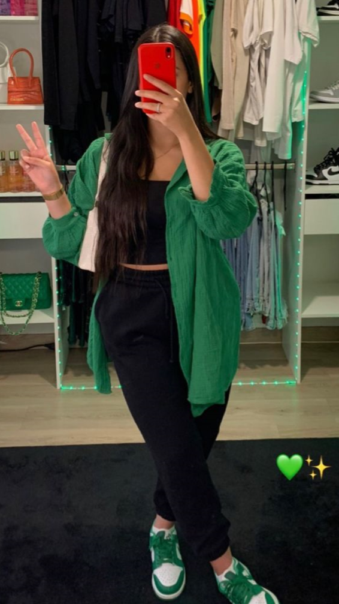
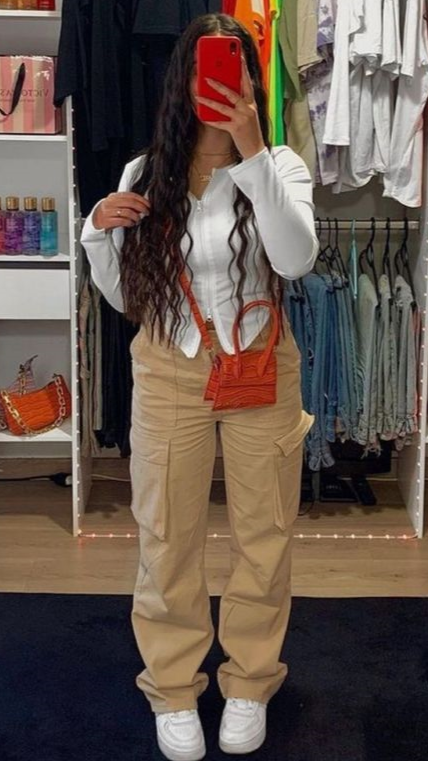
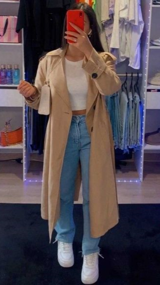
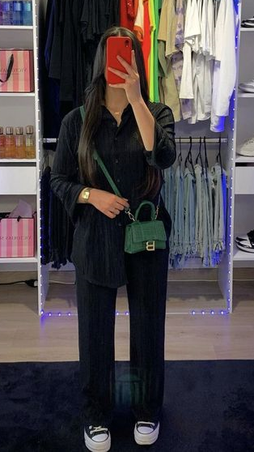
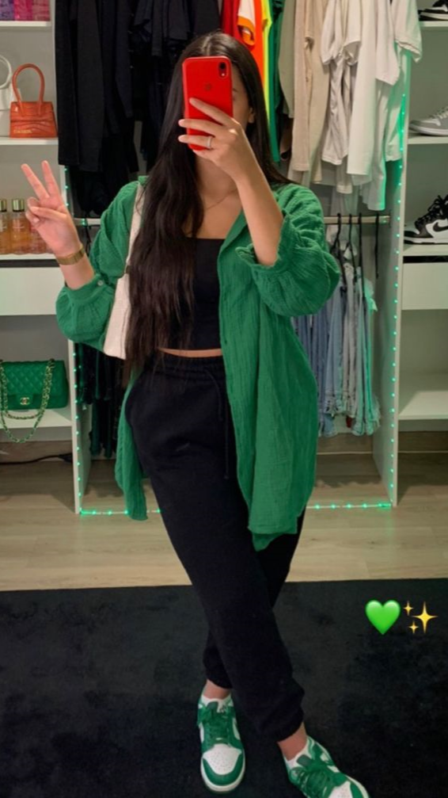
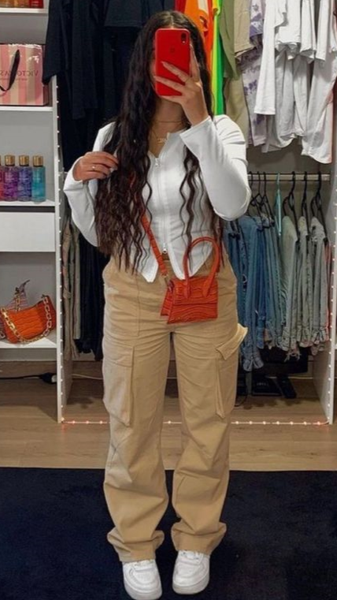
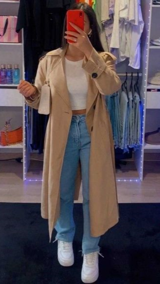
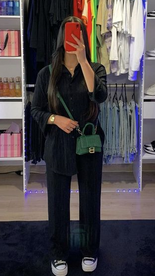

Outfit Zaradrip Basic
Les grands outfits zaradrip basics, très souvent un jean ou un cargo avec un sweat et une paire de dunk font l'affaires. Ici vous retrouverez des outfits basics pour sortir de chez soi ! Composé de vetement simples, je suis certaines que vous aurez toute ces pieces dans votre dressing. A vous de les porters puis essayer quelques outfits !* Cargo
* Sac
 






